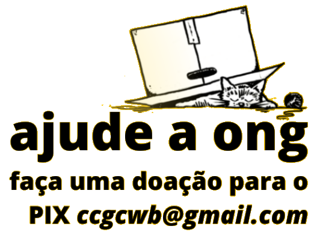

Quem chegou até aqui deve estar se perguntando, do que se trata essa ONG? Pois bem, somos uma ONG formada majoritariamente por mulheres, e que busca instruir a sociedade em relação ao abandono, cuidados com os felinos e etc.
Resgatar é uma das nossas frentes, mas acreditamos que sem instruir, ajudar e atuar nas comunidades, o número de abandono e o número de animais de rua nunca será reduzido.
Assim como uma grande empresa, a ONG busca ser organizada e através de processos de gestão, coordenar e expandir a nossa atuação na cidade de Curitiba.
Sempre nos dizem que somos burocráticos, mas é com organização, processos e comprometimento que as coisas funcionam.

 Pix: ccgcwb@gmail.com
Pix: ccgcwb@gmail.com
 Login
Login